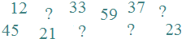
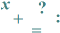
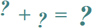
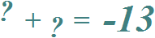
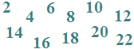

Problema 1
Escribir algebraicamente las siguientes expresiones:
-
El doble de un número \(x\).
-
El triple de un número \(x\).
-
El doble de un número \(x\) más \(5\).
-
El cuadrado del triple de un número \(x\).
-
Las tres cuartas partes de un número \(x\).
Problema 2
En cada caso, hallar el número que cumple:
- Su doble más 5 es 35.
- Al sumarle su consecutivo obtenemos 51.
- Al sumarle su doble, su mitad y 15 se obtiene 99.
- Su cuarta parte es 15.
Problema 3
Hallar tres números consecutivos cuya suma sea 219.
Problema 4

Si el doble de un número más 28 es igual 82, ¿qué número es?
Problema 5

Si el resultado de restar el doble de \(x\) al quíntuple de \(x\) es 33, ¿qué número es \(x\)?
Problema 6

Si la suma de un número \(x\) con su consecutivo es 27, ¿qué número es \(x\)
Problema 7

Su la suma de dos números consecutivos es -13, ¿qué números son?
Problema 8

La suma de un número par y el siguiente par que le sigue es igual a 66, ¿qué números son?
Problema 9
La suma de un número \(x\) con su mitad y con su tercera parte es igual a 22. ¿Qué número es \(x\)?
Problema 10
La mitad de un número \(x\) más la tercera parte del consecutivo de \(x\) es igual a 2. Calcular \(x\).